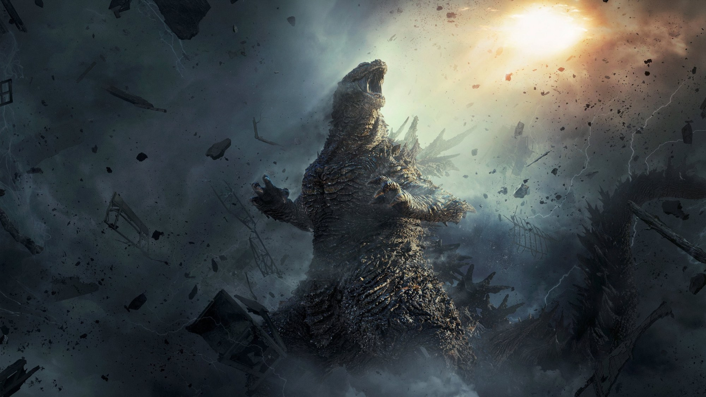
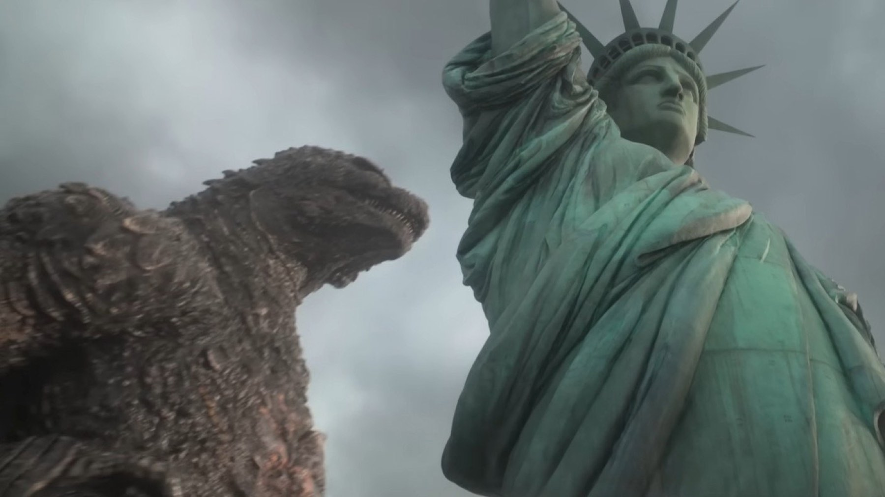

Godzilla Minus Zero: quando esce e cosa sappiamo
Dal 5 novembre al cinema il sequel di Minus One: Yamazaki torna alla regia, il budget cresce e per la prima volta un film giapponese è girato per IMAX
Un film giapponese costato meno di 15 milioni di dollari ha battuto i blockbuster di Hollywood sul loro terreno e ha portato a casa un Oscar. Adesso Godzilla Minus One ha un seguito, Godzilla Minus Zero, e la domanda è semplice: che cosa succede a un miracolo fatto con pochi soldi quando ne ha di più? In Italia lo scopriremo il 5 novembre 2026, con Plaion Pictures.
Il film da cui si riparte
Minus One era ambientato nel Giappone del dopoguerra, tra il 1945 e il 1947, e seguiva un ex pilota kamikaze alle prese con il trauma e con il mostro. È uscito in Giappone il 3 novembre 2023 e ha incassato 116 milioni di dollari nel mondo. Gli effetti visivi li ha fatti lo studio Shirogumi di Chōfu: 35 artisti per 610 inquadrature in otto mesi.
Alla 96ª cerimonia degli Oscar ha vinto il premio per i migliori effetti visivi, il primo film non in lingua inglese a riuscirci. Questo è il peso che il sequel si porta addosso. Chi non ha visto il primo ha tutto il tempo di recuperarlo: lo consigliamo, perché Minus Zero riprende la storia dei suoi personaggi.
La trama: il 1949 e una famiglia da ricostruire
Il film è ambientato nel 1949, in un Giappone che sta ancora faticosamente cercando di rialzarsi dopo la guerra e dopo il passaggio del mostro. Torna Godzilla, e i due protagonisti, l'ex pilota Kōichi e Noriko, affrontano un'altra lotta per la sopravvivenza, secondo Cinefilos.it. La storia riprende due anni dopo gli eventi del primo film e continua a ruotare attorno alla famiglia Shikishima.
Il teaser di 30 secondi, uscito a luglio 2026, mostra una città con le cicatrici della distruzione e una voce che dice: «Ritengo che Godzilla possa resistere perfino a un attacco termonucleare». Il mostro esce dal mare e mostra segni di rigenerazione. Lo slogan è «Tornare allo zero non è un'opzione». Da qui si capisce che il film punta anche sulle scelte morali di chi aveva combattuto il mostro la volta scorsa, non solo sui combattimenti.
Il cast: i volti di Minus One e tre arrivi
Ryunosuke Kamiki è Kōichi e Minami Hamabe è Noriko. Tornano anche Yuki Yamada, Kuranosuke Sasaki, Sakura Ando e Miou Tanaka. Tra i nuovi nomi ci sono Min Tanaka, nel ruolo di un biologo, Masami Nagasawa, una meteorologa, e Jun Kunimura, un ufficiale medico. Sono tre ruoli di contorno scientifico e medico che fanno pensare a una storia in cui ci si interroga su cosa sia davvero questo mostro, oltre che su come fermarlo. È una nostra lettura: i personaggi li vedremo in sala.

Regia, riprese e formato: la scommessa dell'IMAX
Alla regia, alla sceneggiatura e alla supervisione degli effetti c'è ancora Takashi Yamazaki. Le riprese si sono svolte in Giappone da agosto a dicembre 2025 e la colonna sonora è di Naoki Satō, che torna dopo il primo film. Gli effetti sono dello studio Shirogumi, lo stesso di Minus One.
La novità vera è il formato. Cinefilos.it ricorda che è il primo film giapponese della storia girato per IMAX, con camere digitali certificate. Il budget è più alto di quello del predecessore, ma resta inferiore ai 15 milioni di dollari: una cifra piccola per un film di questo tipo. Un budget che cresce solo un po' e uno schermo molto più grande dicono parecchio sull'ambizione.
Cosa recuperare prima di andare in sala
Il consiglio è uno solo: rivedi Minus One. Ti rimette in testa il tono di quel film, fatto di colpa e di gente comune che prova a rimettere insieme una vita. Il teaser ripete la stessa idea con una frase sola, quella sulla resistenza di Godzilla a un attacco termonucleare, ed è bene arrivare con il ricordo di come il mostro era stato fermato la prima volta.
Chi cerca la sala giusta deve tenere conto del formato: se il film è stato girato per IMAX, la differenza tra una proiezione normale e una nel formato pensato dagli autori potrebbe essere forte. Ma sarà la visione a dircelo, e prima di scrivere cosa conviene scegliere aspettiamo di aver visto la differenza.
Perché lo aspettiamo, e cosa ci preoccupa
Il motivo è semplice: il primo film aveva paura vera. Il mostro era una catastrofe, non una star, e il racconto restava sempre dalla parte di chi scappa. Il rischio del sequel, e questa è una nostra opinione, è che lo schermo gigante e il budget in crescita spingano verso lo spettacolo puro e facciano perdere quell'intimità. Il teaser, con quel mostro che si rigenera, fa pensare a una minaccia che non si ferma, e questo ci rassicura.
Nessuno ha ancora visto il film in Italia, quindi non diamo voti. Alla prima proiezione guarderemo soprattutto una cosa: se la distruzione ha ancora un volto umano.
A chi potrebbe piacere
A chi ha amato Minus One e vuole sapere cosa è successo dopo, a chi cerca un film di mostri che prenda sul serio il dolore di chi sopravvive e a chi vuole vedere in sala, sullo schermo più grande possibile, un film nato per l'IMAX. Il tema della guerra e della paura è pesante: valuta con attenzione se portare spettatori molto giovani.
Quando il film sarà uscito scriveremo la recensione e ti diremo se regge il confronto con il predecessore. Intanto segna la data: 5 novembre, in sala.
Domande frequenti
Quando esce Godzilla Minus Zero in Italia?
Il 5 novembre 2026 nei cinema, con Plaion Pictures, secondo Cinefilos.it.
Bisogna aver visto Godzilla Minus One?
Il sequel riprende due anni dopo gli eventi del primo film e rimette al centro la famiglia Shikishima, quindi conviene vedere prima Minus One.
Chi c'è nel cast?
Tornano Ryunosuke Kamiki e Minami Hamabe, con Yuki Yamada, Kuranosuke Sasaki, Sakura Ando e Miou Tanaka. Tra i nuovi arrivi Min Tanaka, Masami Nagasawa e Jun Kunimura.
Chi dirige il film?
Takashi Yamazaki, che è anche sceneggiatore e supervisore agli effetti visivi, come nel primo capitolo.